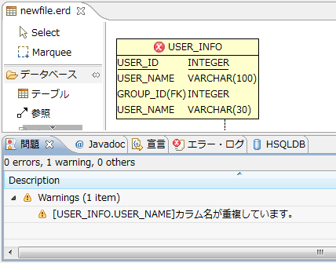
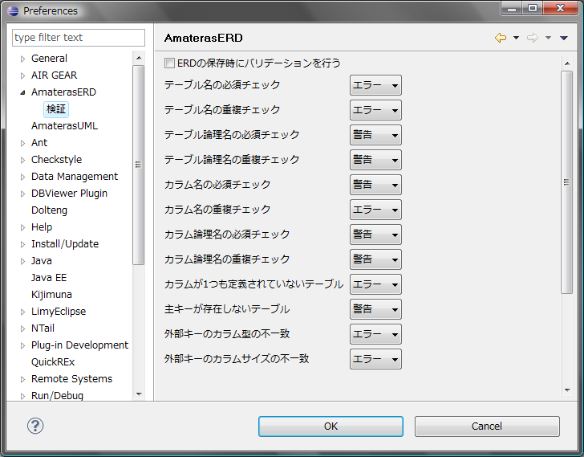

AmaterasERDはダイアグラムの整合性を検証するためのバリデーション機能を備えています。
ダイアグラムの検証を行うにはダイアグラム上で右クリック > [バリデーション] > [バリデーションを実行]を選択します。
バリデーションを実行すると、エラーや警告のあるテーブルにアイコンが表示されます。 ダイアグラム上でテーブルにカーソルをあわせるとエラー内容を確認することができます。 また、問題ビューにもエラー内容が表示されます。

Eclipseの設定ダイアログの[AmaterasERD] > [検証]では、 バリデーションのルールごとにエラーレベルや実行するかどうかを設定することができます。

バリデーションの実行によって付与されたエラーマーカーはダイアグラム上で右クリック > [バリデーション] > [マーカーを削除]で削除することができます。